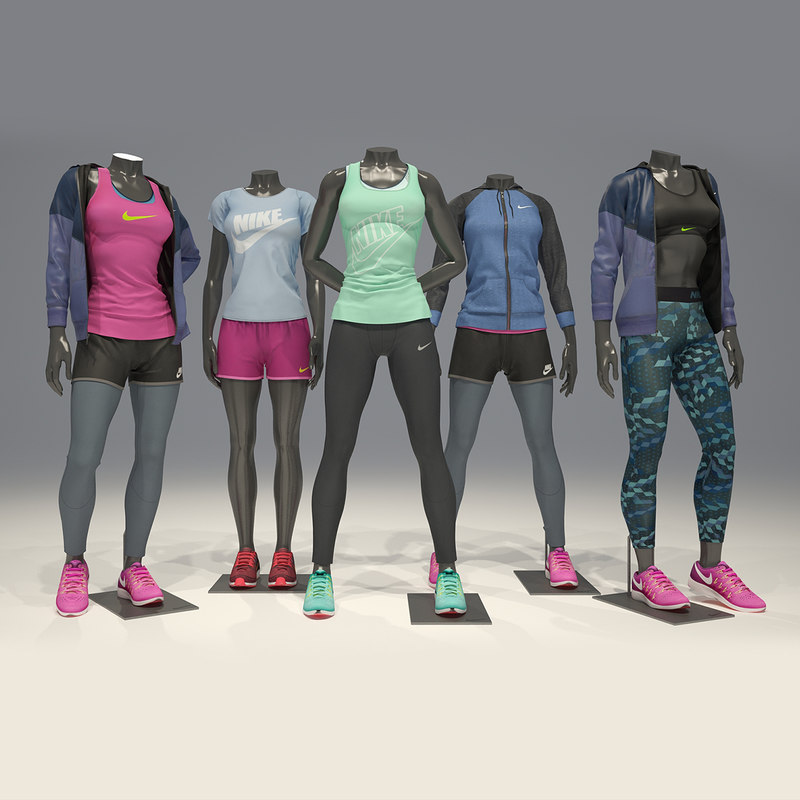

3D effects on a computer can be done without a wire frame modeling software and are sometimes indistinguishable in the final form. Some graphic art softwares include a lot of filtersthat can be put into a 2D vector graphics or 2D roster graphics on transparent layers.
The Development of cloth simulation software as Marvelous Designer, CLO3D and Optitex has enabled artisits and fashion designers to model dynamic 3D clothing on the computer. Which can be used in virtual fashion catalogs
